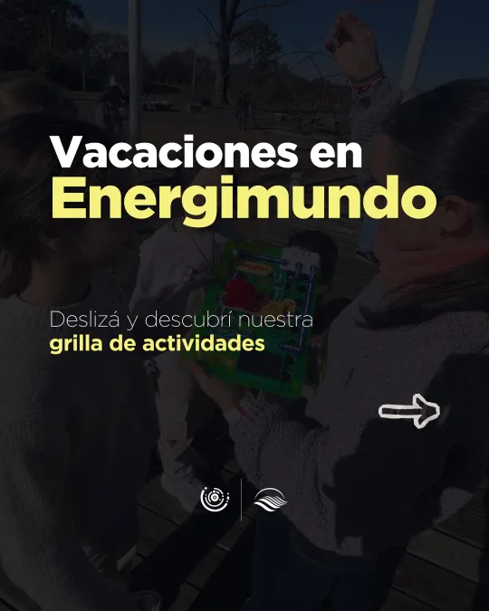
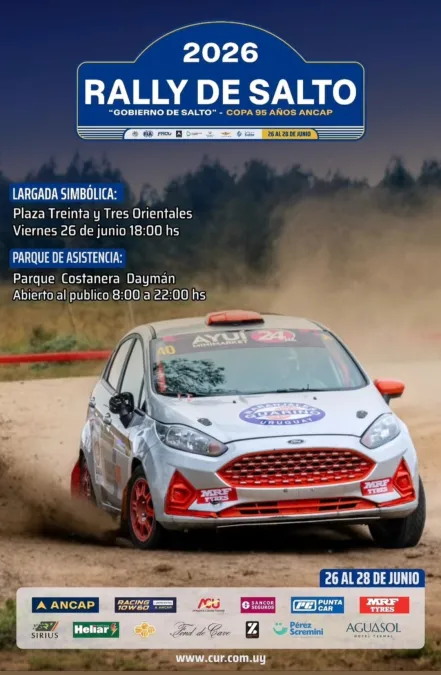
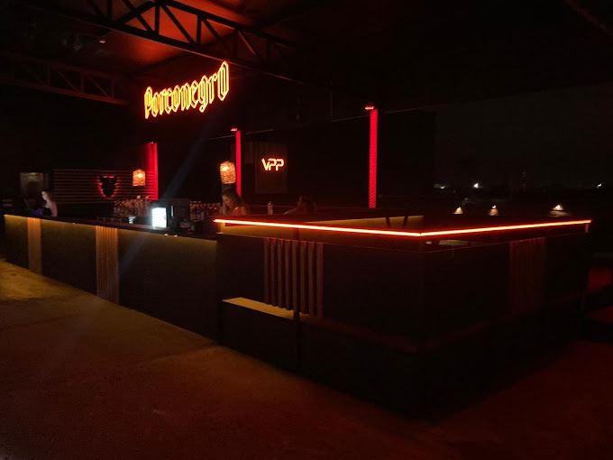
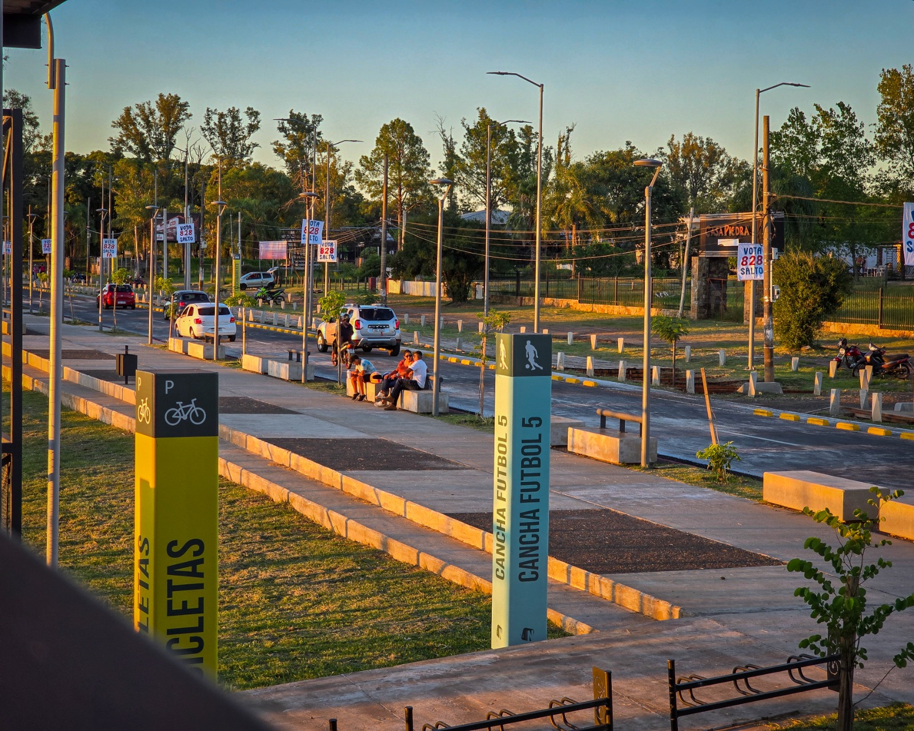

27 Jun
Vacaciones de Julio en Energimundo 2026
Familiar | Salto Grande · Energimundo

26 Jun
4ª Fecha Rally de Salto – Copa 95 Años de ANCAP 2026
Deportivo | Del 26 al 28 de junio · Entrada libre
25 Jun
Muestra Academia de Danzas de Lucía Tenca
Cultural | Teatro Larrañaga · 20:30 hs
03
NOV
Maratón Internacional
Veni a correr con nosotros
Deportes
20:00 hs
03
NOV
Festival Primavera
Veni a correr con nosotros
Música
20:00 hs
03
NOV
Expo Salto Productivo
Veni a correr con nosotros
Feria
20:00 hs
Ver más próximos eventos
Noche de Milonga
Cultura | Club Remeros | Vie. 27/6

Feria del Libro Salteño
Feria | Biblioteca Departamental | Sáb. 28/6

Torneo de Paddle Nocturno
Deportivo | Complejo Solari | Dom. 29/6
Noche de Milonga
Cultura | Club Remeros | Vie. 27/6
Feria del Libro Salteño
Feria | Biblioteca Departamental | Sáb. 28/6
Torneo de Paddle Nocturno
Deportivo | Complejo Solari | Dom. 29/6
03
NOV
Festival Primavera
Bandas locales y cierre en vivo
Música
20:00 hs
12
OCT
Maratón Costanera
Carrera participativa junto al río
Deportes
09:00 hs
21
SEP
Noche de Museos
Recorridos, charlas y muestras abiertas
Cultura
19:30 hs
08
AGO
Sabores del Litoral
Degustaciones, parrilla y productos regionales
Gastronomía
18:00 hs
14
JUL
Feria de Artesanos
Diseño, tejidos y emprendimientos salteños
Feria
15:00 hs
24
JUN
Fiesta de San Juan
Encuentro comunitario y celebración tradicional
Religiosos
17:00 hs
09
MAY
Tarde de Juegos
Actividades para niños, plaza y espectáculo familiar
Infantiles
16:00 hs